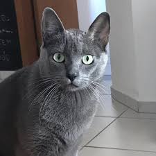

|  |
| Korat |
BEHAVIOR
Korat cats have a quiet, sweet nature but are very intelligent and playful. They make ideal household pets and can be devoted to their human companions.
GROOMING
The Khao Manee cats coat is short and easy to care for. As with all cats, this breed needs regular vaccinations, parasite control and annual health checks.
HEALTH PROBLEMS
The Korat cat is quite a long-lived cat with ages of 18 and 19 not uncommon. Korat cats are known to suffer from gangliosidosis, an inherited enzyme deficiency that affects the nervous system causing paralysis. There is a test for this and owners should check that the breeder's cats have been tested and are free from the problem before buying a kitten.
NUTRITION
Every cat is unique and each has their own particular likes, dislikes, and needs when it comes to food. However, cats are carnivores and every cat must obtain 41 different and specific nutrients from their food. The proportion of these nutrients will vary depending on age, lifestyle and overall health, so it's not surprising that a growing, energetic kitten needs a different balance of nutrients in her diet than a less active senior cat. Other considerations to bear in mind are feeding the right quantity of food to maintain 'ideal body condition' in accordance with feeding guidelines and catering to individual preference regarding wet or dry food recipes.